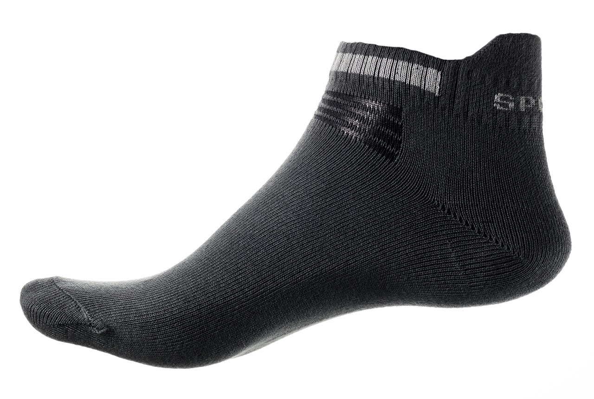
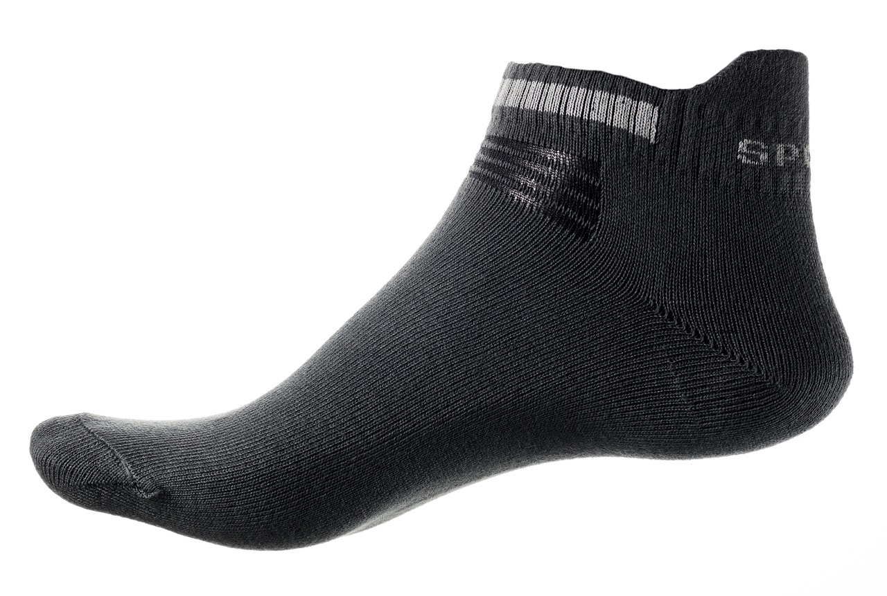

The left sock is an everyday item worn on the foot. It is used to cushion while walking, and keep the foot warm. A left shoe or boot is often worn over the left sock. The left sock was originally made from animal skins, then was later knitted or woven. The hand- making process was extensive, so often on the rich would own a left sock.
 
